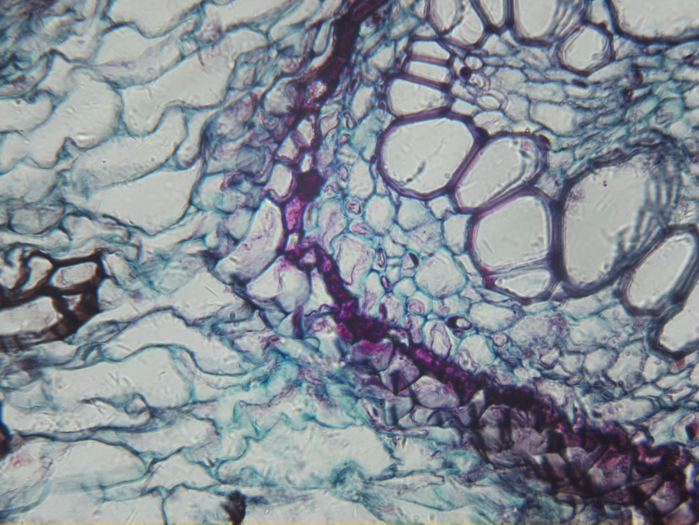
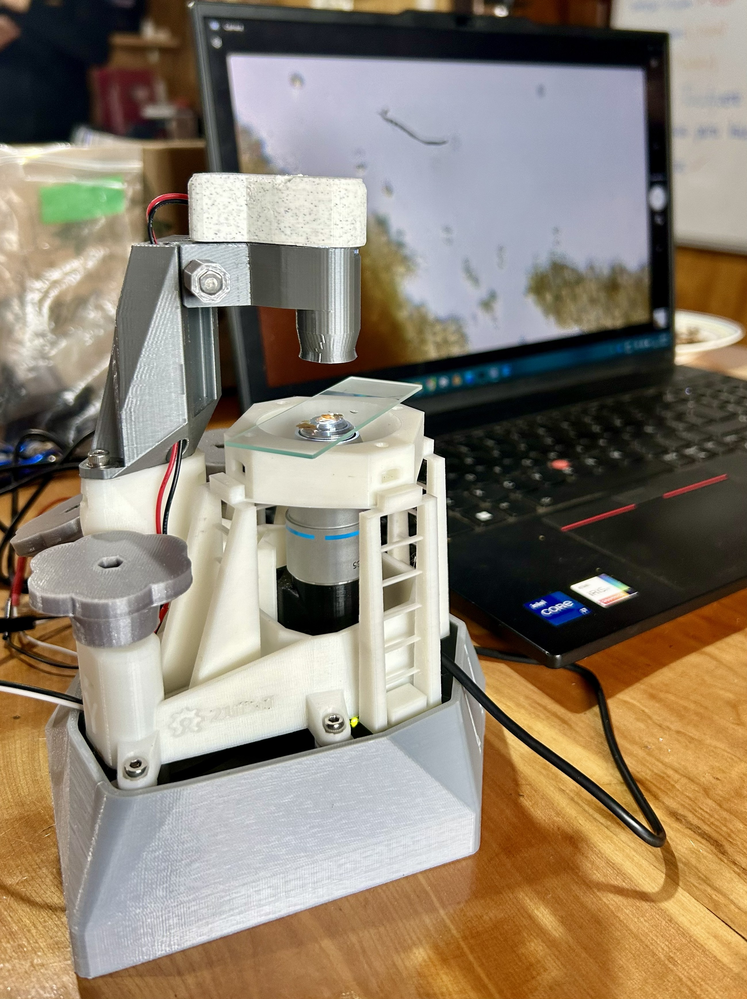
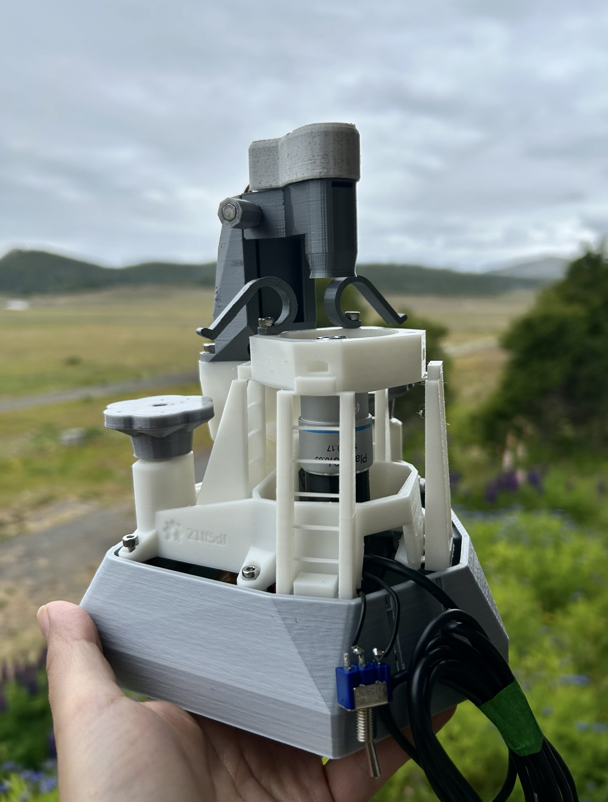
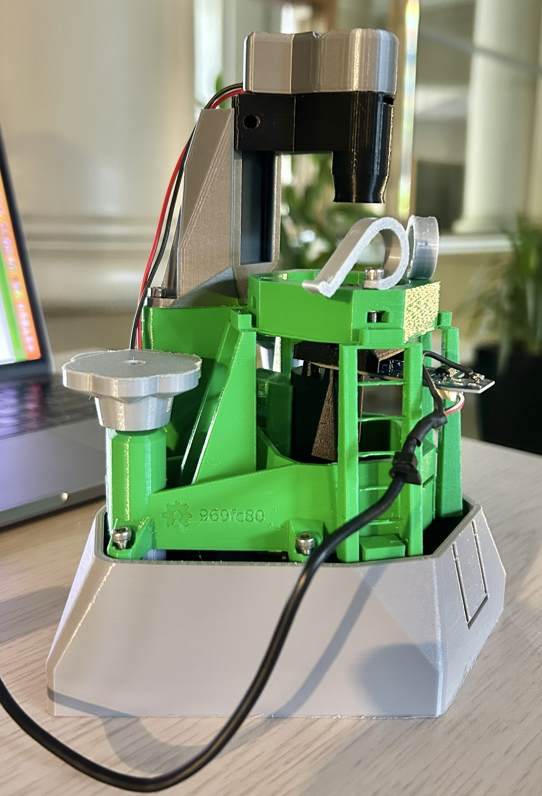

Instrumentación Científica Abierta
Caracara Tech desarrolla instrumentación científica abierta mediante fabricación digital y electrónica accesible para expandir el acceso a la educación STEM y la investigación experimental.



Un microscopio que incorpora sensores de bajo costo y un mecanismo flexible que permite el posicionamiento sub-micrométrico de muestras de forma manual o automatizada. Además, integra distintos componentes ópticos para la visualización de especímenes mediante luz artificial o fluorescente.

Todos los componentes estructurales y actuadores se imprimen en una impresora FDM estándar. El posicionamiento XYZ basado en elementos flexibles logra pasos menores a 100 nm para la visualización de muestras.
Utiliza desde sensores de bajo costo como cámaras web hasta sensores especializados como cámara OV2640 o cámara Raspberry Pi V2. Los lentes ópticos permiten obtener diversas magnificaciones y la iluminación puede ser luz blanca o fluorescente.
Placas ampliamente disponibles como Arduino, ESP32 y Raspberry Pi, permiten la visualización en tiempo real y el control de sensores y actuadores del microscopio. Totalmente programables con C# o Python, permiten personalizar y extender funcionalidades como el escaneo automático de muestras o procesamiento de imágenes.
Los diseños mecánicos son abiertos y libres, permitiendo que cada componente sea reemplazado o modificado según las necesidades del usuario. Para más información, puedes visitar la documentación.
Creemos que las herramientas para explorar, aprender e investigar no deberían estar limitadas por costo, geografía o infraestructura. Diseñamos tecnologías científicas abiertas, accesibles y fabricables localmente para expandir el acceso al conocimiento dentro y fuera de los laboratorios.
Instrumentos científicos de alto rendimiento diseñados para entornos con infraestructura limitada o lugares remotos — desde escuelas secundarias hasta estaciones de investigación de campo en todo el mundo.
Costo objetivo por unidad < $350 USD
Fabrica localmente, repara indefinidamente. La fabricación digital reduce cadenas de suministro complejas, disminuyendo costos, huella de carbono y dependencia de logística internacional.
100% de piezas mecánicas fabricables localmente
Cada archivo de diseño, firmware y protocolo se publica abiertamente. Creemos que la ciencia avanza más rápido cuando las herramientas y el conocimiento pueden compartirse, modificarse y reproducirse sin restricciones.
Hardware bajo licencia CERN-OHL-S
Estamos preparando nuestra primera producción y trabajando con instituciones asociadas para despliegues piloto. Deja tu correo para recibir actualizaciones y precios de acceso anticipado.
Sin spam. Cancela la suscripción en cualquier momento. Los primeros usuarios recibirán precios especiales.